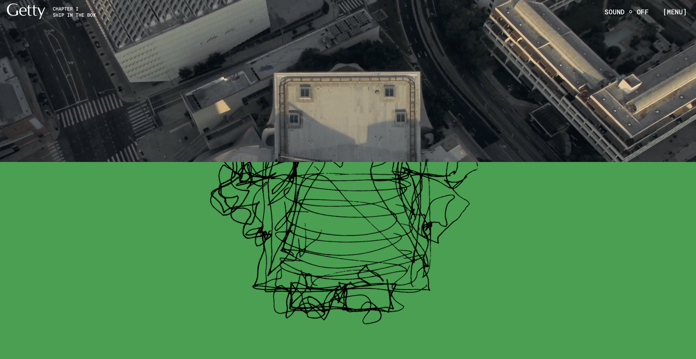

Jamie Seow
Assignment
—-——-—-—-——ONE
01
What was the first thing you paid attention to when interacting with the
experience?
The use of animations and scrolling is so well thought-out and meaningful!
It corresponds with the themes unfolding in the website, adds visual
interest and helps segment parts clearly.

02
Spend two minutes with the experience and create a list of each of
your discrete actions.
Good Narrative Design
-
The architect’s thoughts appeared in text follow cursor movements,
like a conductor's gestures. This ties in well with the "Concert
Hall" topical theme. However, readability is compromised as the
paragraphs can get longer than the cursor line of motion can
accommodate, and you start having to read backwards.
-
Hovered over title fonts and they expand to “Fill” the space, just
as sound would in a space. Adds to the sound narrative and
strengthens the cohesive design of the website!
Well-designed Categorising
-
Interacted with tags on the sides of segments, such as the “Sound
On” tag to reveal which musical piece was being played, and the
“Explore Model” tag. Tags are subtle yet informative, guiding
without obstructing the beauty of the website spreads.
-
A perceptive choice to make information tags a different font from
the title/body texts. By right a graphic design faux pas, it
actually improves signposting for the viewer: text in that font
can reliably be fallen back on for navigation.
Interactive features
-
Visually stimulating and ordered flow through from intro image
shots, to the sketch, to the starting of the video sections’ draft
concert hall shape when scrolling.
-
Hovered over the elements, and they shift around in perspective,
overlapping in some areas spatially, creating a 3-dimensionality
to the otherwise 2-dimensional sketch.
-
Clicked and dragged the mouse to move the 3D model around in
space, observed the well-rendered textures and angles. Clicked on
the information points located on the model to get additional
information on it.
03
What part of the experience did you spend the most time engaging with?
The 3D models! I loved looking at the materiality of the models, and could
appreciate the structures from every side. This mimicked holding the
models in ones hands, an excellent interactive feature placed into the
website for an immersive and elevated experience!
The front page, and typically at every intersection from intro text to the
interview screens. I loved looking at the subtle change in illustration
perspective with my mouse hover, as well as how the words swelled to fill
the space with my mouse+scroll movements. With the intersections, I could
hear the dipping in + out of the music, and see the match-cuts of sketch,
to final architecture, to the draft stage models that would bring me to
the interview process. It helped me appreciate the work so much more, and
is a delightful way of segmenting areas, and adds to the overall
cohesiveness of the narrative.
04
What was the most common action in your two minute interaction with
the experience?
Scrolling back and forth to see how the transition of elements
interact with each other! Beautiful, thoughtful and fascinating to
watch, while not detracting from the flow of the work but adding
interest and categorization!
05
What is your impression of the intended primary goal of the
interactive experience?
It is a portfolio case study for the Walt Disney Concert Hall, to show
the process from conception to execution of the design of the
structure. It is both a showcase work for the public (arranged in a
digestible, interactive and engaging way), as well as a good
demonstration of the architects’ abilities for potential future
collaborators.
_____________________________


_____________________________
06
How does the interactive experience communicate this primary goal?
Each part of the process is segmented into its own thematic
section,with video interviews showing the thought processes of the
designers like a biography. Many different mediums of progress are
shown: 2D sketches, still images, drone shots from all angles, images
of the work-in-progress, 3D renderings of the structural drafts of the
hall, and colour scheme descriptions.
07
What is your impression of how the experience should be interacted
with over time? (For how long and how many different times)
Once over slowly, maximum twice. I feel like you can go through it
once if it is done very slowly: it is much like a virtual gallery
exhibition, to be walked through and absorbed. If you scroll through
quickly, you’ll miss the magic of the details. Second round could be
to better appreciate the parts missed out, but beyond that the magic
may be lost.
08
How does the interactive experience communicate how it should be
interacted with over time?
While scrolling, elements move by expanding, animating, or contracting to
indicate progression. These elements stop their movement when scrolling
stops, like a stop-motion movie caught in a still frame. When one element
expands exponentially when scrolled to, you would know it has entered the
next section. An example is that the pages peek into the next sections
when it is nearing the end of the existing one. This is good, so that the
viewer is aware of how the information is categorized, which is good for
clarity of points.
9. What other media forms (digital or otherwise) does the experience
reference?
It mimics a gallery exhibition walk-through experience, and the pace
emulates it as well!


10. What does this reference/s communicate to you about how you should act
when engaging with your research experience?
Absorb slowly, appreciate every detail, interact with every section, as
you would in a well thought-out space that invites you into the process of
everything.
11. What does this reference/s communicate to you about how you should
feel when engaging with your research experience?
Awe, fascination, appreciation, inquisitive curiosity!
12. What is the most frustrating part of the interaction to you and what
makes that part frustrating?
Trying to read the title words and the starting moving letters. Styling
sacrificed legibility unfortunately in some instances. Furthermore at
times, the next section scrolled too rapidly into frame, making it a
little disorienting for the viewer.
13. What is the most satisfying part of the interaction to you and what
makes that part satisfying?
When I am going to be frustrated about specific parts of the process, a
helpful guide/point is put in! For example: There are markers to say “you
are leaving interactive section III”, there are sections of the video,
there is freezing of frame for the bg so it isn’t distracting to the text,
there is subtitles for the interview! If you want to know what song is
being played in the background, just hover to the “Sound On” section at
the top of the screen, and it shows up!